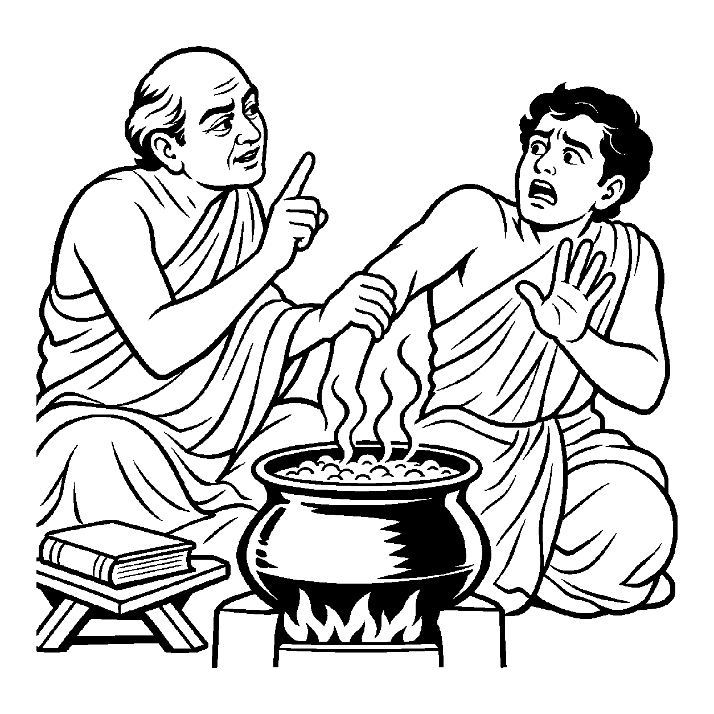

જળનો મૂળ સ્વભાવ પરમ શીતળ અને શાંત છે, પરંતુ જ્યારે તેને ચૂલા પર મૂકી નીચે અગ્નિ પ્રગટાવવામાં આવે છે, ત્યારે તે અગ્નિના નિમિત્તથી જળ અત્યંત ગરમ બનીને ઉકળે છે અને કોઈનો હાથ પણ બાળી શકે છે. આ ઉષ્ણતા જળનો મૂળ સ્વભાવ નથી, છતાં વર્તમાનમાં અગ્નિની ઉપાધિથી તે સાચે જ ગરમ છે. તેવી જ રીતે જ્યારે અનાદિકાળના કર્મોદય વિપાકના સાન્નિધ્યમાં જીવ ક્રોધ, માન, માયા અને લોભરૂપ વિભાવિક પરિણામો ભોગવે છે, ત્યારે તે અશુદ્ધ દશાને યથાર્થ ઓળખવી તે 'ઉપાધિસાપેક્ષ અશુદ્ધ દ્રવ્યાર્થિકનય' છે.
જો કેવળ નય ૨૧ (શુદ્ધ દ્રવ્યાર્થિક) ને જ પકડી રાખીએ, તો સંસાર, બંધન કે પાપ જેવું કશું રહે જ નહીં! આ અશુદ્ધ દ્રવ્યાર્થિકનય બતાવે છે કે કર્મના નિમિત્તથી આત્મામાં વાસ્તવિક વિકાર જન્મે છે. જીવ અજ્ઞાનવશ રાગ-દ્વેષ કરે છે અને તેનાથી નવા કર્મો બાંધે છે. આ નય સંસારની ભ્રમણશીલ વાસ્તવિકતાનું સાચું દર્શન કરાવે છે.
આ નય "હું તો શુદ્ધ જ છું, મારે વળી વ્રત-તપ શાના?" એવા સ્વચ્છંદી નિશ્ચયાભાસને તોડીને સાધકને જમીન પર લાવે છે કે જ્યાં સુધી કર્મ ઉપાધિ છે ત્યાં સુધી તું વિકારી છે!
કર્મોદય સાન્નિધ્યથી, પ્રગટે કષાય વિભાવ;
ઉપાધિસાપેક્ષ નયે, ઓળખ અશુદ્ધ સ્વભાવ.
વર્તમાન વિભાવ અને દોષોને સ્વીકારીને પ્રમાદ ત્યજી આત્મશુદ્ધિના પુરુષાર્થમાં સદા જાગ્રત થવું.

ધર્મક્ષેત્રમાં શાસ્ત્રાર્થ કરતો એક યુવાન પંડિત વિવેકાનંદ સમયસારના શ્લોકો બોલીને દંભ કરતો હતો: "આત્મા તો સદા અસંગ અને શુદ્ધ છે! મને ક્રોધ આવે કે લોભ થાય, તે તો પુદ્ગલનું કામ છે, મારા આત્માને કોઈ પાપ અડતું જ નથી!" આ ખોટા નિશ્ચયના ઓઠા હેઠળ તે ખુલ્લેઆમ ક્રોધ કરતો, ગાળો બોલતો અને અનૈતિક આચરણ કરતો. તેના ગુરુજીએ તેને વારંવાર ચેતવ્યો છતાં તે માનતો નહોતો કે મારા આત્મામાં કોઈ વિકાર છે. એક દિવસ ગુસ્સામાં તેણે એક સેવકને માર માર્યો અને પછી હસીને કહ્યું: "આ તો શરીરે માર્યો, હું તો અકર્તા છું!" આ ઘોર અહંકાર અને સ્વચ્છંદતાથી આશ્રમનું વાતાવરણ ઝેરી બની ગયું: "આ ખોટા અધ્યાત્મના અંધકારમાંથી સાચા વિવેકનો ઉદય કઈ રીતે થાય?"
તે જ સાંજે ગુરુજીએ ચૂલા પરથી ઉકળતા પાણીનું એક વાસણ નીચે ઉતાર્યું અને પંડિત વિવેકાનંદનો હાથ પકડીને તે ઉકળતા પાણીમાં નાખવા લાગ્યા! વિવેકાનંદ ચીસ પાડીને પાછળ હટી ગયો: "ગુરુજી, આ શું કરો છો? મારો હાથ બળી જશે!" ગુરુજીએ ગંભીર સ્વરે કહ્યું, "કેમ ડરે છે? શાસ્ત્ર કહે છે કે જળ તો સ્વભાવથી શીતળ છે, તો તારો હાથ કેમ બળશે?" વિવેકાનંદે ધ્રૂજતા કંઠે કહ્યું, "ગુરુજી, જળ ભલે સ્વભાવે શીતળ હોય, પણ અગ્નિની ઉપાધિથી અત્યારે એ સાચે જ ધગધગે છે!" ગુરુજીએ સ્મિત સાથે કહ્યું, "બસ, આ જ ઉપાધિસાપેક્ષ અશુદ્ધ દ્રવ્યાર્થિકનય છે! તારો આત્મા સ્વભાવે ભલે શુદ્ધ હોય, પણ કર્મોદયના અગ્નિથી અત્યારે તું સાચે જ ક્રોધથી ઉકળી રહ્યો છે અને સંસારમાં બળી રહ્યો છે. સ્વચ્છંદતા છોડ અને આ વિકારને શાંત કર!" આ બોધામૃતનું પાન કરતાં જ પંડિતનો દંભ ચકનાચૂર થઈ ગયો. તે ગુરુચરણોમાં રડી પડ્યો અને સાચા ચારિત્રના માર્ગે વળી ગયો.
જો આ નય કદાગ્રહ બને, તો મનુષ્ય આત્માને કાયમ માટે વિકારી અને અશુદ્ધ જ માની બેસે છે, જેનાથી મુક્તિની આશા જ નષ્ટ થઈ જાય છે. આવી એકાંત જડતાથી જીવ વર્તમાન વ્યવહારિક સાધના અને કર્તવ્યોની ઉપેક્ષા કરી બેસે છે અને ક્રમિક પરિણામોને સુધાર્યા વિના અકાળે પૂર્ણતાના મિથ્યા સંતોષમાં રાચે છે.
આ જ નય જ્યારે સમન્વયશીલ બને છે, ત્યારે તે સાધકને વર્તમાન વિકાર પ્રત્યે સજાગ કરીને કર્મોપાધિનો નાશ કરવા માટે સંયમ અને તપશ્ચર્યાના માર્ગે અડગ રાખે છે.